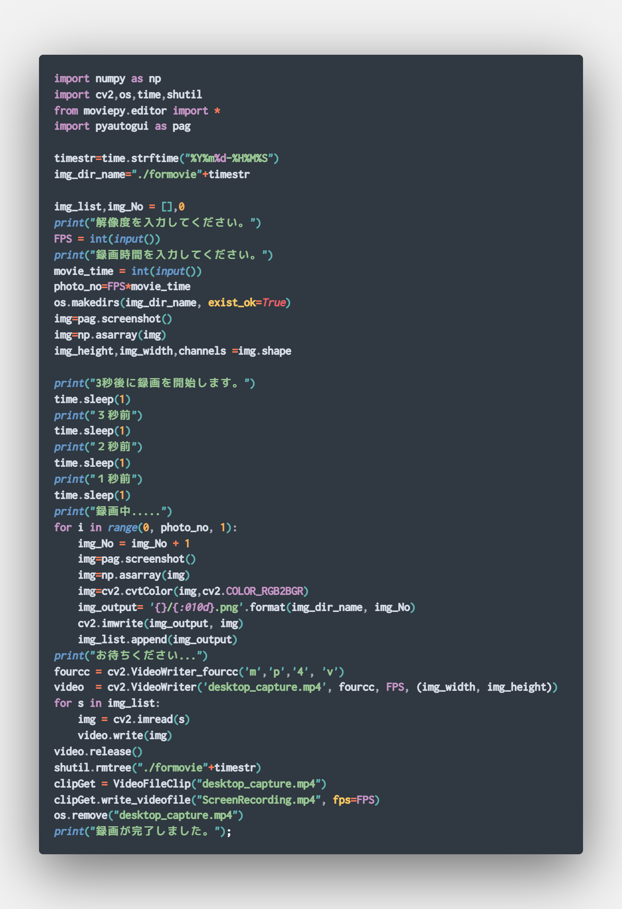
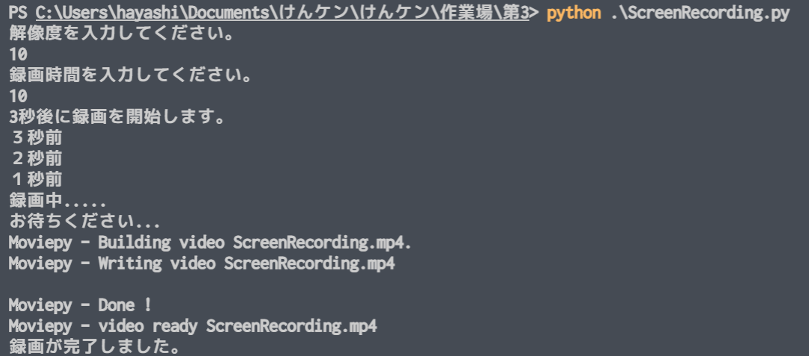

けんケンのJProgramming制作日記2
(ちょっと自己満足ブログが楽しかったのでまた書くことにしました。)br
前回のソフトで実際に解説動画を作ってみたんですよ、
そうしたらですね～、なぜか動画が表示されない～！
そして、原因の解明を進めたところ、
どうやらそのままWebに置くとエラーが出るようです。
画像をつなぎ合わせた特殊な動画なので、そのままでは表示できないみたい。
せっかく作ったのに～！なんでだよぅ...
ですが、このまま泣き寝入りするわけにはいきません。
しばらーく試行錯誤を重ねた結果、
MoviePy という、Pythonで使える動画編集ライブラリ*を使って
再度保存しなおせばいけそう！ということで
やってみます！
※ライブラリ…そのままでは使えない機能を使えるようにするため、
他の言語も用いて作られたプログラムのかたまりのこと。
まずはMoviePyをインストールしました。(画像無し)
前回のプログラムを編集します。プログラムの流れ的には、
前回のプログラムで動画生成→MoviePyで動画取得→保存しなおす→元の動画を削除
という感じで良いと思います。作っていきます！

(VisualStudioCodeにプログラムが載せやすくなる拡張機能を入れました。イイネ♪)
こんな感じになりました。
付け足したコードの意味を解説しておくと、、、
from moviepy.editor import *
MoviePyライブラリから動画編集の機能全てを使えるようにする。
clipGet = VideoFileClip("desktop_capture.mp4")
変数「clipGet」に前回のプログラムで作られた動画を格納する。
clipGet.write_videofile("ScreenRecording.mp4", fps=FPS)
変数「clipGet」の動画を、「ScreenRecording」という名で、
入力して指定したFPSで保存する。
os.remove("desktop_capture.mp4")
前回のプログラムで作られた動画を削除する。
というものです。
これを実行してみると、

FPSは10,録画時間も10で動画を作ってみました。
しっかり「ScreenRecording.mp4」だけが残って、余計なものは削除されています。
それではお待ちかね、このソフトでこのサイトの作成画面を録画してみました。
それでは、どうぞ！
どうかな？ちゃんとできてますよね？ね？ね？
やった～！成功だー！ わーい！
あ、喜ぶのは早かった...
ちゃんと見れていますかね？
見れていたらLINEで報告、よろしくです！
ではまた～！